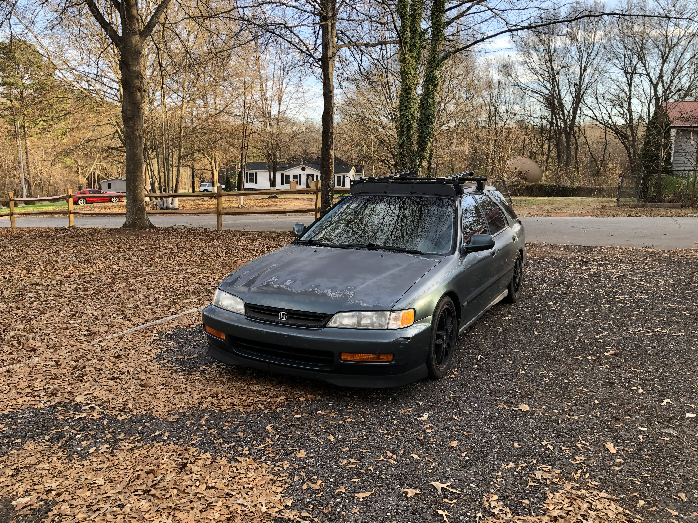

-
The Beginning
Buys very clean, very low miles, very rare 1989 Honda Civic sedan.
-
Getting Lower
Lowered on Progress Coilovers and a fresh alignment. The car feels much better now. Very enjoyable to drive, albeit sluggish due to the auto transmission
A photo of the very sad autotragic shifter
-
Putting in Work
Fixing lots of 32 year old parts that have been neglected.
-
Preparation
Collecting rare and hard to find parts for a manual transmission swap. This is where patience pays off. Lots of searching on eBay, craigslist, and Facebook Marketplace.
-
Manual Swap

Manual swap finally begins. 1989 model year specific quirks prevent a one day project from being completed.
Make sure to always count your splines when you source a transmission from FB Marketplace...
-
Swapped
After having to order a new clutch with the correct spline count, the Civic is now driving around with a wiggly stick!
-
Enjoying the Ride
After some adjustments and sorting out kinks, the Civic is 1000x more fun to drive and is now getting 5mpg more than with the old autotragic slushy box.
-
Dread
After some time, a coolant leak developed, and the source was traced to the dreaded Blown Headgasket.
Removed the head and took it to a machine shop to save this car from certain death. Also began sourcing more rare parts to get this particular job done. The waiting game begins...
-
FINALLY
After over two months of waiting and having to source a low-mileage Japanese camshaft, the Civic is running, driving, and not leaking.
This car is running like new and feeling amazing after a full top-end refresh and new JDM camshaft.
-
Doom
After only one week back on the road, an incompetent driver renders this restored classic a heap of scrap metal.
Lessons learned from this: 32 year old Civics hold up extremely well in a crash, and not having airbags can actually save your life.
-
New Life
After some searching and researching, a 97 Accord Wagon is the perfect successor.